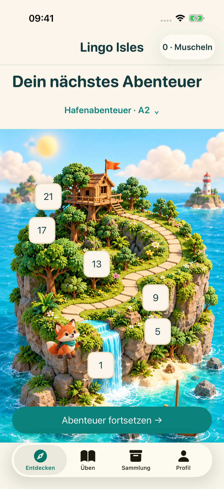
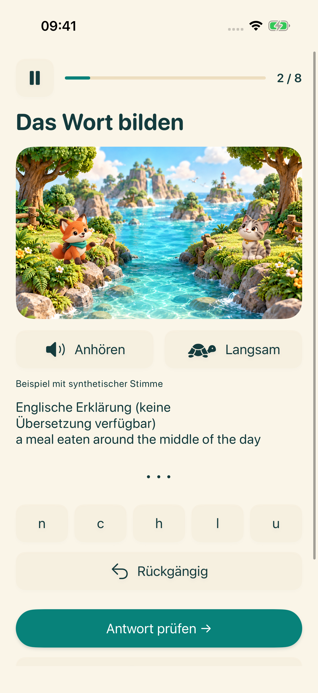
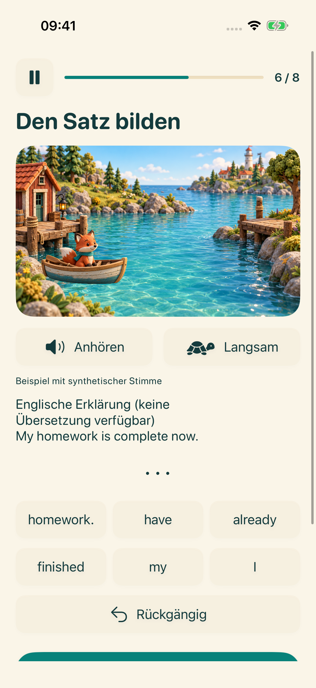
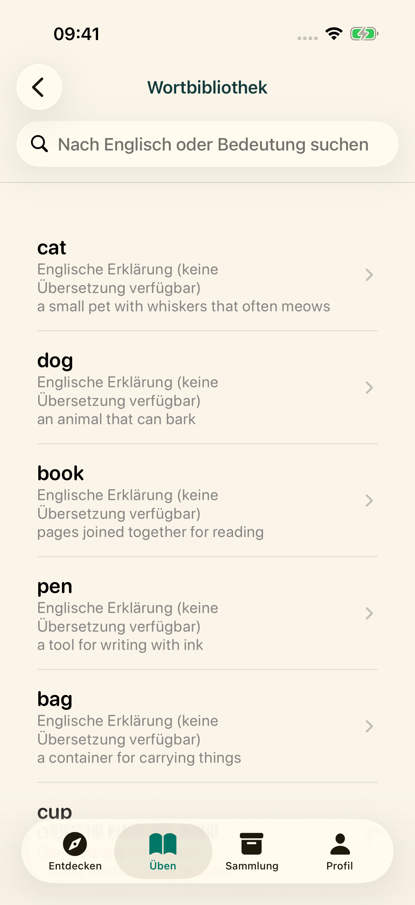

Deine nächste Insel wartet
Wähle deine Lernstufe und folge einem Pfad mit kurzen Englischübungen.
Entdecke vier Lerninseln. Höre zu, bilde Wörter, setze Sätze zusammen und probiere deine Stimme aus – eine kleine Entdeckung nach der anderen.
Entdecke das AbenteuerStart auf iPhone und iPad in Vorbereitung


Wähle deine Lernstufe und folge einem Pfad mit kurzen Englischübungen.

Höre die Systemstimme und ordne Buchstaben an, um die englische Rechtschreibung zu üben.

Bringe Wörter in die richtige Reihenfolge und entdecke, wie englische Sätze aufgebaut sind.

Erkunde die Wortbibliothek, speichere Favoriten und wiederhole Gelerntes.

Aufnehmen, anhören und noch einmal versuchen. Auf unterstützten Geräten ist optional eine Transkription direkt auf dem Gerät verfügbar. Das ist eine Übung ohne Aussprachebewertung.
Die Oberfläche unterstützt 16 Sprachen. Lernerklärungen gibt es auf Englisch und in vereinfachtem Chinesisch. In anderen Sprachen werden klar gekennzeichnete englische Erklärungen angezeigt, wenn keine Übersetzung vorliegt.
Lerninhalte und Fortschritt werden auf deinem Gerät gespeichert. Ein Konto oder eine vom Entwickler betriebene Cloud-Synchronisierung ist nicht erforderlich. Die verfügbaren Sprachressourcen hängen vom Gerät ab; Werbe- und Datenschutzdienste benötigen eine Netzwerkverbindung.
Profile unter 18 Jahren oder ohne Altersgruppe starten keinen Werbeablauf. Bei Erwachsenen hängen Anzeigen von Datenschutzeinstellungen und Verfügbarkeit ab. Das Ansehen von Anzeigen mit Belohnung ist freiwillig.